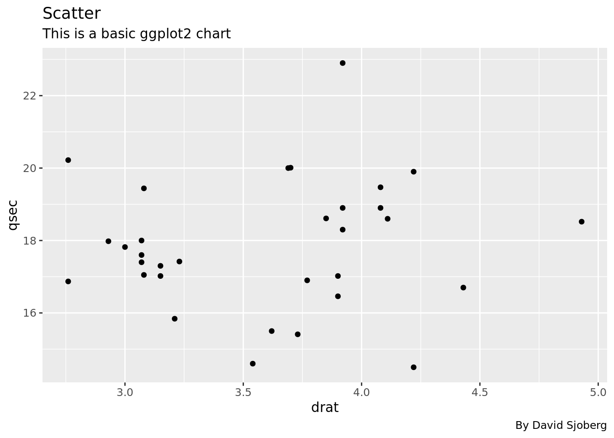
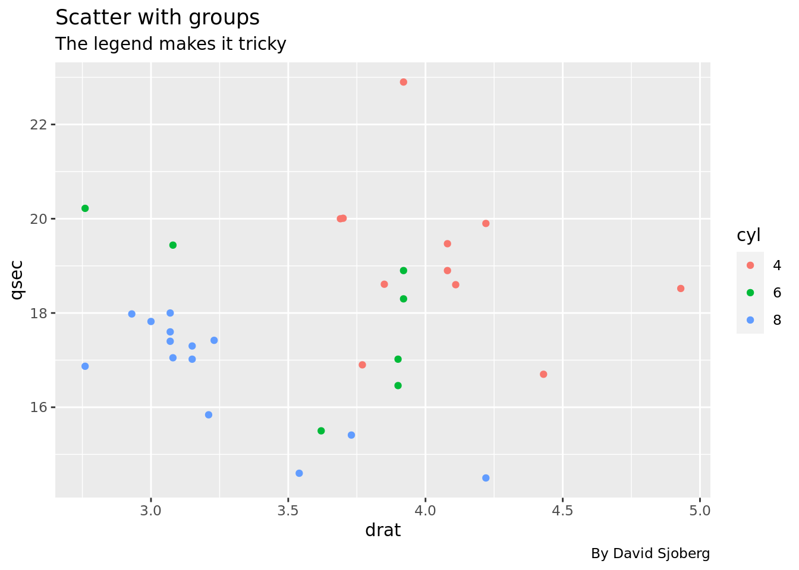
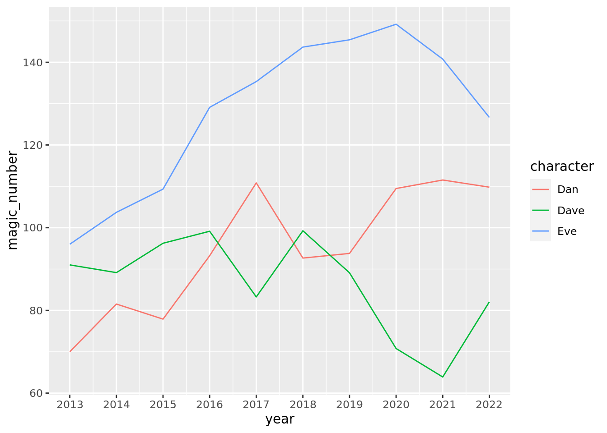

In this document some standard ggplot2 plots are replicated in D3. Better viewed in landscape mode.
Code
d3 =require("d3@7")functionsmall_grid(A, domain) {let middle_pos = []for (let i =0; i < (A.length-1); i++) {let diff = A[i+1]-A[i] middle_pos.push(A[i] + diff/2) }// If extra minor is needed before first major grid lineif ((A[0] - (middle_pos[0]-A[0])) > domain[0]) { middle_pos.unshift(A[0] - (middle_pos[0]-A[0])) }// If extra minor is needed after last major grid lineif ((A[A.length-1] + (A[A.length-1] - middle_pos[middle_pos.length-1])) < domain[1]) { middle_pos.push(A[A.length-1] + (A[A.length-1] - middle_pos[middle_pos.length-1])) }return middle_pos }functionscale_expand(range_array, mult) {let domain = (range_array[1] - range_array[0])return [range_array[0]-domain*mult, range_array[1]+domain*mult]}
Scatterplot
ggplot2
Code
ggplot(df, aes(drat, qsec)) +geom_point() +labs(title ="Scatter",subtitle ="This is a basic ggplot2 chart",caption ="By David Sjoberg")

D3
Code
scatter_with_groups = {const data =await d3.json("data/scatter.json")const xAccessor = d => d.dratconst yAccessor = d => d.qsec// Dimensionslet dimensions = {width: width,height: width /1.4,marginTop: width /15,marginRight: width /30,marginBottom: width /10,marginLeft: width /12 }; dimensions.ctrWidth= dimensions.width- dimensions.marginLeft- dimensions.marginRight dimensions.ctrHeight= dimensions.height- dimensions.marginTop- dimensions.marginBottom// Draw Imageconst svg = d3.create("svg").attr("width", dimensions.width).attr("height", dimensions.height)const ctr = svg.append("g") // <g>.attr("transform",`translate(${dimensions.marginLeft}, ${dimensions.marginTop})` )const xScale = d3.scaleLinear().domain(d3.extent(data, xAccessor)).range([0, dimensions.ctrWidth]).nice()const yScale = d3.scaleLinear().domain(d3.extent(data, yAccessor)).range([dimensions.ctrHeight,0]).nice()// Axisconst yAxis = d3.axisLeft(yScale).tickSizeOuter(0).ticks(4)const yAxisDOM = ctr.append('g').style("font-size","14px").call(yAxis).call(g => g.select(".domain").remove()) yAxisDOM.selectAll("text").style("font-size","12px").style("color","grey")const xAxis = d3.axisBottom(xScale).tickSizeOuter(0).ticks(5)const xAxisDOM = ctr.append('g').style('transform',`translateY(${dimensions.ctrHeight}px)` ).call(xAxis).call(g => g.select(".domain").remove()) xAxisDOM.selectAll("text").style("font-size","12px").style("color","grey")//// x axis label svg.append("text").attr("text-anchor","middle").attr("x", dimensions.marginLeft+ dimensions.ctrWidth/2).attr("y", dimensions.marginTop+ dimensions.ctrHeight+ dimensions.marginBottom*.5).style('font-size','14px').style('fill','1d1d1d').text("drat")//// Y axis label svg.append("text").attr("text-anchor","middle").attr("transform","rotate(-90)").attr("y", dimensions.marginLeft*.5).attr("x",-dimensions.marginTop- dimensions.ctrHeight/2).style('font-size','14px').style('fill','1d1d1d').text("qsec")// Panel//// title svg.append("text").attr("text-anchor","start").attr("y", dimensions.marginTop*.35).attr("x", dimensions.marginLeft).style('font-size','20px').style('fill','1d1d1d').text("Scatter")//// subtitle svg.append("text").attr("text-anchor","start").attr("y", dimensions.marginTop*.8).attr("x", dimensions.marginLeft).style('font-size','16px').style('fill','1d1d1d').text("This is a basic D3 chart")//// caption svg.append("text").attr("text-anchor","end").attr("y", dimensions.marginTop+ dimensions.ctrHeight+ dimensions.marginBottom*.8).attr("x", dimensions.marginLeft+ dimensions.ctrWidth).style('font-size','12px').style('fill','1d1d1d').text("By David Sjoberg") ctr.append("rect").attr("width", dimensions.ctrWidth).attr("height", dimensions.ctrHeight).attr("fill","#ebebeb");const xGrid = (g) => g.style('stroke','white').style('stroke-width',1.5).selectAll('line').data(xScale.ticks(5)).join('line').attr('x1', d =>xScale(d)).attr('x2', d =>xScale(d)).attr('y1',0).attr('y2', dimensions.ctrHeight)const xGridMinor = (g) => g.style('stroke','white').style('stroke-width',.5).selectAll('line').data(small_grid(xScale.ticks(5), xScale.domain())).join('line').attr('x1', d =>xScale(d)).attr('x2', d =>xScale(d)).attr('y1',0).attr('y2', dimensions.ctrHeight)const yGrid = (g) => g.style('stroke','white').style('stroke-width',1.5).selectAll('line').data(yScale.ticks(4)).join('line').attr('y1', d =>yScale(d)).attr('y2', d =>yScale(d)).attr('x1',0).attr('x2', dimensions.ctrWidth)const yGridMinor = (g) => g.style('stroke','white').style('stroke-width',0.5).selectAll('line').data(small_grid(yScale.ticks(4), yScale.domain())).join('line').attr('y1', d =>yScale(d)).attr('y2', d =>yScale(d)).attr('x1',0).attr('x2', dimensions.ctrWidth) ctr.append('g').call(yGrid) ctr.append('g').call(xGrid) ctr.append('g').call(xGridMinor) ctr.append('g').call(yGridMinor)// Geom layer ctr.append('g').selectAll('circle').data(data).join('circle').attr('cx', d =>xScale(xAccessor(d))).attr('cy', d =>yScale(yAccessor(d))).attr('r',3)return svg.node();}
Scatterplot with groups
ggplot2
Code
ggplot(df, aes(drat, qsec, color =factor(cyl))) +geom_point() +labs(title ="Scatter with groups",subtitle ="The legend makes it tricky",caption ="By David Sjoberg",color ="cyl")

D3
Code
scatter = {const data =await d3.json("data/scatter.json")const xAccessor = d => d.dratconst yAccessor = d => d.qsecconst colorAccessor = d =>parseInt(d.cyl)// Dimensionslet dimensions = {width: width,height: width /1.4,marginTop: width /15,marginRight: width /5,marginBottom: width /10,marginLeft: width /12 }; dimensions.ctrWidth= dimensions.width- dimensions.marginLeft- dimensions.marginRight dimensions.ctrHeight= dimensions.height- dimensions.marginTop- dimensions.marginBottom// Draw Imageconst svg = d3.create("svg").attr("width", dimensions.width).attr("height", dimensions.height)const ctr = svg.append("g") // <g>.attr("transform",`translate(${dimensions.marginLeft}, ${dimensions.marginTop})` )const xScale = d3.scaleLinear().domain(d3.extent(data, xAccessor)).range([0, dimensions.ctrWidth]).nice()const yScale = d3.scaleLinear().domain(d3.extent(data, yAccessor)).range([dimensions.ctrHeight,0]).nice()// Axisconst yAxis = d3.axisLeft(yScale).tickSizeOuter(0).ticks(4)const yAxisDOM = ctr.append('g').style("font-size","14px").call(yAxis).call(g => g.select(".domain").remove()) yAxisDOM.selectAll("text").style("font-size","12px").style("color","grey")const xAxis = d3.axisBottom(xScale).tickSizeOuter(0).ticks(5)const xAxisDOM = ctr.append('g').style('transform',`translateY(${dimensions.ctrHeight}px)` ).call(xAxis).call(g => g.select(".domain").remove()) xAxisDOM.selectAll("text").style("font-size","12px").style("color","grey")//// x axis label svg.append("text").attr("text-anchor","middle").attr("x", dimensions.marginLeft+ dimensions.ctrWidth/2).attr("y", dimensions.marginTop+ dimensions.ctrHeight+ dimensions.marginBottom*.5).style('font-size','14px').style('fill','1d1d1d').text("drat")//// Y axis label svg.append("text").attr("text-anchor","middle").attr("transform","rotate(-90)").attr("y", dimensions.marginLeft*.5).attr("x",-dimensions.marginTop- dimensions.ctrHeight/2).style('font-size','14px').style('fill','1d1d1d').text("qsec")// Panel//// title svg.append("text").attr("text-anchor","start").attr("y", dimensions.marginTop*.35).attr("x", dimensions.marginLeft).style('font-size','20px').style('fill','1d1d1d').text("Scatter")//// subtitle svg.append("text").attr("text-anchor","start").attr("y", dimensions.marginTop*.8).attr("x", dimensions.marginLeft).style('font-size','16px').style('fill','1d1d1d').text("This is a basic D3 chart")//// caption svg.append("text").attr("text-anchor","end").attr("y", dimensions.marginTop+ dimensions.ctrHeight+ dimensions.marginBottom*.8).attr("x", dimensions.marginLeft+ dimensions.ctrWidth).style('font-size','12px').style('fill','1d1d1d').text("By David Sjoberg") ctr.append("rect").attr("width", dimensions.ctrWidth).attr("height", dimensions.ctrHeight).attr("fill","#ebebeb");const xGrid = (g) => g.style('stroke','white').style('stroke-width',1.5).selectAll('line').data(xScale.ticks(5)).join('line').attr('x1', d =>xScale(d)).attr('x2', d =>xScale(d)).attr('y1',0).attr('y2', dimensions.ctrHeight)const xGridMinor = (g) => g.style('stroke','white').style('stroke-width',.5).selectAll('line').data(small_grid(xScale.ticks(5), xScale.domain())).join('line').attr('x1', d =>xScale(d)).attr('x2', d =>xScale(d)).attr('y1',0).attr('y2', dimensions.ctrHeight)const yGrid = (g) => g.style('stroke','white').style('stroke-width',1.5).selectAll('line').data(yScale.ticks(4)).join('line').attr('y1', d =>yScale(d)).attr('y2', d =>yScale(d)).attr('x1',0).attr('x2', dimensions.ctrWidth)const yGridMinor = (g) => g.style('stroke','white').style('stroke-width',0.5).selectAll('line').data(small_grid(yScale.ticks(4), yScale.domain())).join('line').attr('y1', d =>yScale(d)).attr('y2', d =>yScale(d)).attr('x1',0).attr('x2', dimensions.ctrWidth) ctr.append('g').call(yGrid) ctr.append('g').call(xGrid) ctr.append('g').call(xGridMinor) ctr.append('g').call(yGridMinor)// Geom layer const groups = [...newSet(data.map(d =>colorAccessor(d)))]var color = d3.scaleOrdinal().domain(groups).range(d3.schemeSet1); ctr.append('g').selectAll('circle').data(data).join('circle').attr('cx', d =>xScale(xAccessor(d))).attr('cy', d =>yScale(yAccessor(d))).attr('r',3).style("fill", d =>color(colorAccessor(d)))// Legendconst ctrLegend = svg.append("g") // <g>.attr("transform",`translate(${dimensions.marginLeft+ dimensions.ctrWidth}, ${dimensions.marginTop+ dimensions.ctrHeight/2})` )let size =20 ctrLegend.append("rect").attr('x', dimensions.marginRight/5-10).attr('y',-2* size).attr("width",20).attr("height",4* size).attr("fill","#ebebeb");// Add one dot in the legend for each name. ctrLegend.append('g').selectAll('circle').data(groups).join('circle').attr("cx", dimensions.marginRight/5).attr("cy",function(d,i){ return-size + i*(size+5)}) // 100 is where the first dot appears. 25 is the distance between dots.attr('r',3).style("fill",function(d){ returncolor(d)}) ctrLegend.append('g').selectAll('text').data(groups).join('text').attr("x", dimensions.marginRight/5+15).attr("y",function(d,i){ return-size + i*(size+5)}) // 100 is where the first dot appears. 25 is the distance between dots.text(d => d).style("alignment-baseline","middle").style("font-size","12px")// // Legend color title ctrLegend.append("text").attr("text-anchor","start").attr("y",-2* size -5).attr("x", dimensions.marginRight/5-10).style('font-size','14px').style('fill','1d1d1d').text("cyl")return svg.node();}
Line plot
ggplot2
Code
df_time_series %>%ggplot(aes(year, magic_number, color = character)) +geom_line() +scale_x_continuous(breaks =2000:2100)

D3
Code
line = {const data =await d3.json("data/time_series.json")const xAccessor = d =>parseFloat(d.year)const yAccessor = d =>parseFloat(d.magic_number)const colorAccessor = d => d.characterconsole.log(data)// Dimensionslet dimensions = {width: width,height: width /1.4,marginTop: width /15,marginRight: width /5,marginBottom: width /15,marginLeft: width /15 }; dimensions.ctrWidth= dimensions.width- dimensions.marginLeft- dimensions.marginRight dimensions.ctrHeight= dimensions.height- dimensions.marginTop- dimensions.marginBottom// Draw Imageconst svg = d3.create("svg").attr("width", dimensions.width).attr("height", dimensions.height)const ctr = svg.append("g") // <g>.attr("transform",`translate(${dimensions.marginLeft}, ${dimensions.marginTop})` )const xScale = d3.scaleLinear().domain(scale_expand(d3.extent(data, xAccessor),0.03)).range([0, dimensions.ctrWidth])const yScale = d3.scaleLinear().domain(scale_expand(d3.extent(data, yAccessor),0.03)).range([dimensions.ctrHeight,0])// Axisconst yAxis = d3.axisLeft(yScale).tickSizeOuter(0).ticks(4)const yAxisDOM = ctr.append('g').style("font-size","14px").call(yAxis).call(g => g.select(".domain").remove()) yAxisDOM.selectAll("text").style("font-size","12px").style("color","grey")const xAxis = d3.axisBottom(xScale).tickSizeOuter(0)const xAxisDOM = ctr.append('g').style('transform',`translateY(${dimensions.ctrHeight}px)` ).call(xAxis).call(g => g.select(".domain").remove()) xAxisDOM.selectAll("text").style("font-size","12px").style("color","grey")//// x axis label svg.append("text").attr("text-anchor","middle").attr("x", dimensions.marginLeft+ dimensions.ctrWidth/2).attr("y", dimensions.marginTop+ dimensions.ctrHeight+ dimensions.marginBottom*.8).style('font-size','14px').style('fill','1d1d1d').text("drat")//// Y axis label svg.append("text").attr("text-anchor","middle").attr("transform","rotate(-90)").attr("y", dimensions.marginLeft*.3).attr("x",-dimensions.marginTop- dimensions.ctrHeight/2).style('font-size','14px').style('fill','1d1d1d').text("qsec")// Panel ctr.append("rect").attr("width", dimensions.ctrWidth).attr("height", dimensions.ctrHeight).attr("fill","#ebebeb");const xGrid = (g) => g.style('stroke','white').style('stroke-width',1.5).selectAll('line').data(xScale.ticks()).join('line').attr('x1', d =>xScale(d)).attr('x2', d =>xScale(d)).attr('y1',0).attr('y2', dimensions.ctrHeight)const xGridMinor = (g) => g.style('stroke','white').style('stroke-width',.5).selectAll('line').data(small_grid(xScale.ticks(), xScale.domain())).join('line').attr('x1', d =>xScale(d)).attr('x2', d =>xScale(d)).attr('y1',0).attr('y2', dimensions.ctrHeight)const yGrid = (g) => g.style('stroke','white').style('stroke-width',1.5).selectAll('line').data(yScale.ticks(4)).join('line').attr('y1', d =>yScale(d)).attr('y2', d =>yScale(d)).attr('x1',0).attr('x2', dimensions.ctrWidth)const yGridMinor = (g) => g.style('stroke','white').style('stroke-width',0.5).selectAll('line').data(small_grid(yScale.ticks(4), yScale.domain())).join('line').attr('y1', d =>yScale(d)).attr('y2', d =>yScale(d)).attr('x1',0).attr('x2', dimensions.ctrWidth) ctr.append('g').call(yGrid) ctr.append('g').call(xGrid) ctr.append('g').call(xGridMinor) ctr.append('g').call(yGridMinor)// Geom layer const groups = [...newSet(data.map(d =>colorAccessor(d)))]var color = d3.scaleOrdinal().domain(groups).range(d3.schemeSet1);// Construct a line generator.const lineGenerator = d3.line().x(d =>xScale(xAccessor(d))).y(d =>yScale(yAccessor(d)));console.log(lineGenerator(data))const dataNest =Array.from( d3.group(data, d => d.character), ([key, value]) => ({key, value}) );console.log(dataNest) dataNest.forEach( (d) => ctr.append('g').append('path').datum(d).attr("d",lineGenerator(d.value)).attr('fill','none')// .attr('stroke', 'blue').attr("stroke",function(d){ returncolor(d.key)}).attr('stroke-width',1.5) )// Legendconst ctrLegend = svg.append("g") // <g>.attr("transform",`translate(${dimensions.marginLeft+ dimensions.ctrWidth}, ${dimensions.marginTop+ dimensions.ctrHeight/2})` )let size =20 ctrLegend.append("rect").attr('x', dimensions.marginRight/5-10).attr('y',-2* size).attr("width",20).attr("height",4* size).attr("fill","#ebebeb");// Add one dot in the legend for each name. ctrLegend.append('g').selectAll('circle').data(groups).join('circle').attr("cx", dimensions.marginRight/5).attr("cy",function(d,i){ return-size + i*(size+5)}) // 100 is where the first dot appears. 25 is the distance between dots.attr('r',3).style("fill",function(d){ returncolor(d)}) ctrLegend.append('g').selectAll('text').data(groups).join('text').attr("x", dimensions.marginRight/5+15).attr("y",function(d,i){ return-size + i*(size+5)}) // 100 is where the first dot appears. 25 is the distance between dots.text(d => d).style("alignment-baseline","middle").style("font-size","12px")// // Legend color title ctrLegend.append("text").attr("text-anchor","start").attr("y",-2* size -5).attr("x", dimensions.marginRight/5-10).style('font-size','14px').style('fill','1d1d1d').text("cyl")return svg.node();}